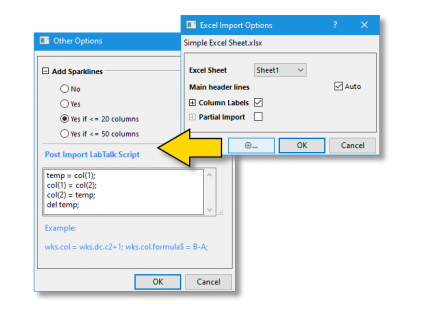
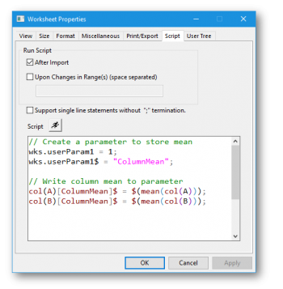

FAQ-428 Wie führe ich LabTalk-Skript nach dem Import aus?
run-script-after-import
Letztes Update: 15.10.2024
Es gibt mehrere Optionen zum Ausführen von LabTalk-Skript nach dem Import, um die Daten nachzubearbeiten (Berechnungen, Formatierung, Analyse, Zeichnen):
- Die Schaltfläche Weitere Optionen ist in die allgemeinen Datenkonnektoren eingebaut, das heißt den CSV-Konnektor und den Excel-Konnektor. Dies erlaubt Anwendern, die Verarbeitung nach dem Import mit LabTalk-Befehlen zu konfigurieren. Dieses Skript wird ausgeführt, sobald der aktive Datenkonnektor eine Datei importiert oder sich neu mit ihr verbindet. LabTalk-Skript kann in das Textfeld im Dialog Weitere Optionen eingegeben werden. Es wird nach einem erfolgreichen Import sofort ausgeführt.
|
Hinweis: Das Ausführen des Skripts nach Import unterbricht die Verbindung zu den Quelldaten nicht.
|
-

- Die meisten Datenkonnektoren gewähren Anwendern nach dem ersten Import Zugriff auf das Feld des Skripts nach Import. Klicken Sie einfach auf das Symbol
 und wählen Sie „Skript nach Import“. Per Standard löst das Klicken auf OK einen Import aus, gefolgt vom Ausführen des Skripts.
und wählen Sie „Skript nach Import“. Per Standard löst das Klicken auf OK einen Import aus, gefolgt vom Ausführen des Skripts.
- Auch wenn einige Datenkonnektoren kein explizites Feld für das Skript nach Import zur Verfügung stellen, können Sie das LabTalk-Skript direkt in das Arbeitsblatt eingeben. Auf der Registerkarte Skript des Dialogs Arbeitsblatteigenschaften eingegebenes LabTalk-Skript kann darauf festgelegt werden, nach dem Import ausgeführt zu werden (diese Methode funktioniert mit beliebigen importierten Daten). Dies ist eine gute Lösung für die Nutzer, die maximale Beweglichkeit wünschen, da es möglich ist, Skripte mit einer Vorlage (.otwu), Arbeitsmappe (.ogwu) oder Projektdatei (.opju) zu speichern. Einzelheiten finden Sie in diesen Blogeintrag von OriginLab.
-
-
-
-

- Falls Sie die älteren auf X-Funktionen basierenden Importroutinen verwenden (z. B. impASC), können Sie LabTalk-Skript zu den Dialogen Daten: Aus Datei importieren für ASCII-, CSV-, SPC- oder Excel-Dateien hinzufügen und haben dabei die Option, Ihre Einstellungen als Dialogdesign zu speichern.
- Für die meisten Dateitypen können Sie über den Dialog iwfilter Skript zu einem Filter für den Import per Drag&Drop hinzufügen. Als Beispiel soll der Excel-Import dienen. Klicken Sie auf Einstellungen: Importfilter verwalten und wählen Sie Excel in der Spalte Filter des Dialogs Importfilter verwalten. Stellen Sie sicher, dass das Kontrollkästchen Drag&Drop unterstützen aktiviert ist. Klicken Sie auf Bearbeiten, um den Dialog Import and Export: iwfilter zu öffnen. Geben Sie das LabTalk-Skript in dem Feld Labtalk-Skript nach Import im Zweig Allgemeine Importeinstellungen ein. Klicken Sie auf Speichern unter, um den Filter (.oif-Datei) umzubenennen und im Verzeichnis <Anwenderdateiordner>\Filters zu speichern. Um den Importfilter zu verwenden, ziehen Sie eine Excel-Datei per Drag&Drop in Origin. Ein Dialog Filter auswählen wird angezeigt. Wählen Sie Ihren gespeicherten Filter und klicken Sie auf OK. Das LabTalk-Skript in dem Feld "Skript nach..." wird automatisch bei Import ausgeführt (siehe unten Hinweis 1). Jeder durch diese Vorgehensweise hinzugefügte Importfilter kann auch beim Importieren über den Dialog Datei: Öffnen oder während der Importoperationen der Stapelverarbeitung verwendet werden (beachten Sie, dass der Dialog batchProcess selbst Skriptoptionen beinhaltet).
- Sie können auch einen Importfilter speichern und das Skript für die Ausführung nach dem Import mit dem Importassistenten hinzufügen. Während diese Option für die Nutzer am interessantesten sein wird, die ASCII-Dateien importieren -- insbesondere Dateien von komplexer Struktur -- , kann sie auch verwendet werden, um binäre und andere "benutzerdefinierte" Datentypen zu importieren.
Hinweis 1: Diese Operation ist nicht auf die Dateiformate Famos, MDF und pClamp anwendbar.
Hinweis 2: Sie können das Kontrollkästchen XF-Dialog öffnen im Abschnitt Allgemeine Importeinstellungen im Dialog iwfilter aktivieren und den entsprechenden Importdialog beim Importieren von Daten öffnen.
Beispiele für Skript nach Import:
// Specify column width wks.col1.width = 5; wks.col2.width = 20; wks.col3.width = 8;
// Designating X, Y, and Y Error columns wks.col1.type = 5; // Designate col(A) to contain data labels wks.col2.type = 4; // Designate col(B) as X data wks.col3.type = 1; // Col(C) as Y data wks.col4.type = 3; // Col(D) as YErr
// Name the workbook with the current date string theDate = date2str($(today()), "MM-dd-yyyy")$; page.longname$ = theDate$;
// These are just two possible approaches to calculating and recording column means in the metadata area // Method 1 wks.userParam1 = 1; // Set visibility to 1 (0 = not visible) wks.userParam1$ = "ColumnMean"; col(A)[ColumnMean]$ = $(mean(col(A))); col(B)[ColumnMean]$ = $(mean(col(B))); //Method 2 wks.userparam(++Mean); loop(ii,1,wks.ncols) { wcol(ii)[Mean]$="=Mean(this)"; } // This loops through all columns}
Schlüsselwörter:LabTalk-Skript, Nachbearbeitung, Daten importieren, Importfilter, iwfilter, Arbeitsblattskript, Arbeitsblatteigenschaften, Stapelverarbeitung, nach Import